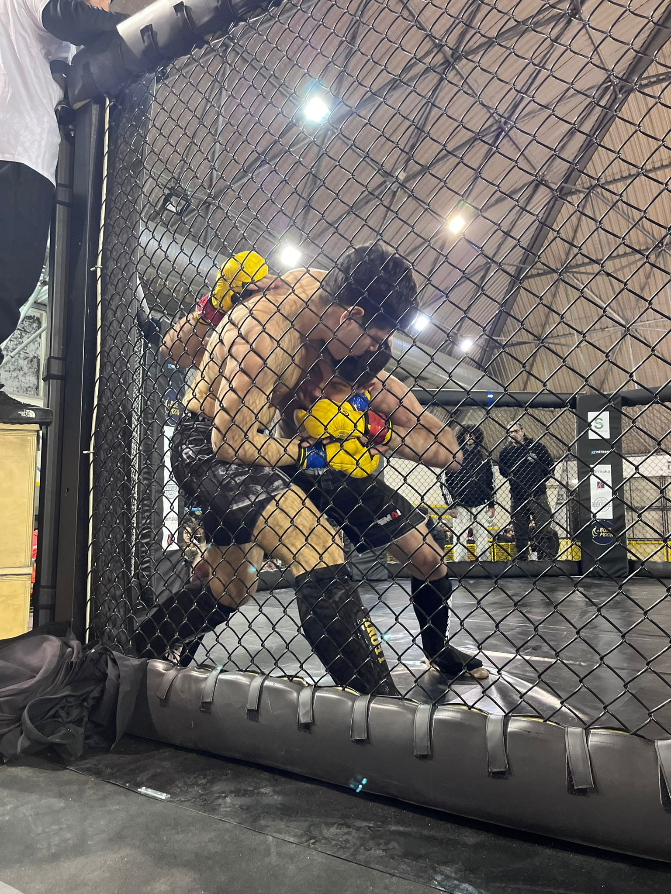

| CHI SONO | ACCADEMIA DELLE ARTI MARZIALI | CONTATTI | SOCIAL |
|---|
|
ITA |
My name is Davide, I am 17 years old and I live in Potenza. I attend the "Einstein-de Lorenzo" comprehensive institute in Potenza, I am in the fourth year of computer science. I practice mma, bjj and kickboxing with the Academy of Martial Arts. I have a determined character, I train intensely to constantly improve my skills. Despite the intensity of my sport, I consider myself a balanced and focused person, always attentive to the details of my physical and mental preparation. I hope to become a point of reference for those who are inspired by this sport. |
|---|
|
L’Accademia delle Arti Marziali e Sport da Combattimento è stata fondata per lo studio, la sperimentazione e l’approfondimento del combattimento in tutte le sue distanze. Lo stile dell’Accademia delle Arti Marziali è misto: tecnico, veloce, preciso, potente, razionale, a volte aggressivo, imprevedibile e spregiudicato. |
L'ACCADEMIA PER ME Per me L’ Accademia delle Arti Marziali è una seconda casa, è la mia testa, il mio cuore, il mio spirito. |
 |
|---|
| Cellulare | Social | |
|---|---|---|
| davide.mecca10@gmail.com |
|
|
© Davide Mecca